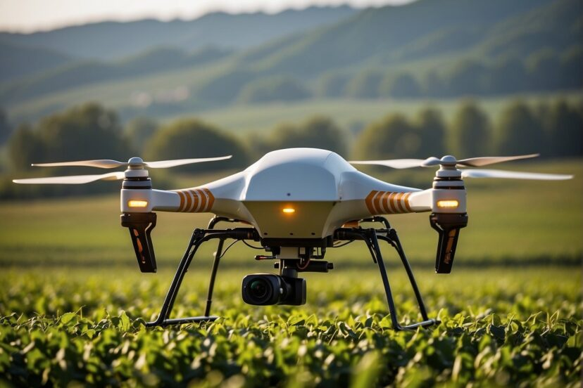

Latest Trends Technology in Agriculture

Drone Technology in Agriculture 4.0
Drones flying over farms capturing aerial images, spraying fertilizers or pesticides it helps with crop monitoring, spraying, and mapping large areas.